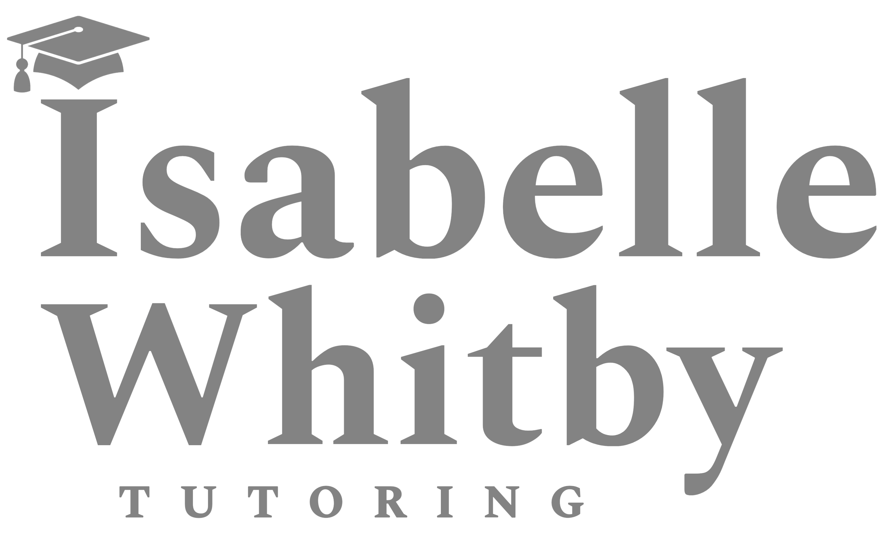

Mathematics has been in constant evolution from ancient Mesopotamia until the modern day and is full of complexities. Let me help you to unravel these and help to succeed in your studies, be that KS3 or undergraduate.
Isabelle has experience tutoring all levels of mathematics from KS3 to undergraduate and has particular familiarity with the following exam specifications:
GCSE: AQA
A-Level: Cambridge International, AQA
At undergraduate level, Isabelle specialises in pure maths but has also taught probability theory and applied modules. Plese send her an email to assure that she is suited to your degree subject.
Whether you're a begininner or are looking to refine your existing vocabulary, Isabelle can provide resources and coaching to suit your level.
Services include oral practise sessions (particularly useful before travel to a francophone country), reading and writing practise, and formal grammar lessons.
Theatre is a demanding doctrine in which you may be examined on anything from essay questions to physical performances.
Victoria can help you to write top-tier theatre reviews. She will teach you to analyse performance texts and she will give indispensable performance training.
At GCSE and A-Level, Victoria has hands-on experience with the Edexcel syllabus but will cater to any exam-board, giving sessions aligned to the student and the syllabus.
At undergraduate level, Victoria can support you in all theoretical and practical aspects, including undertaking your viva to support your final examination.
From Middle English to modern, literature to language, Victoria can provide quote and culture banks to support you in your written and oral assessments. She can also give guided sessions on developing solid arguments which stand out to examiners.
Victoria offers tutoring up to GCSE: she can practise basic English skills for KS2/KS3 students to boost their confidence in class, and hone in on GCSE students' weak points to prepare them for exam season.
In your film studies course, you will study topics such as film history, critical approaches to film, and the making of short films.
Victoria can give one-to-one guidance to help students prepare arguments and evaluate them in order to achieve top grades in their theory exam. She can also review their final productions to give confidence before the submission.